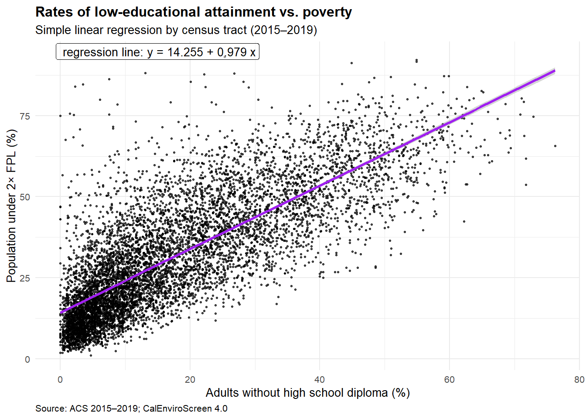
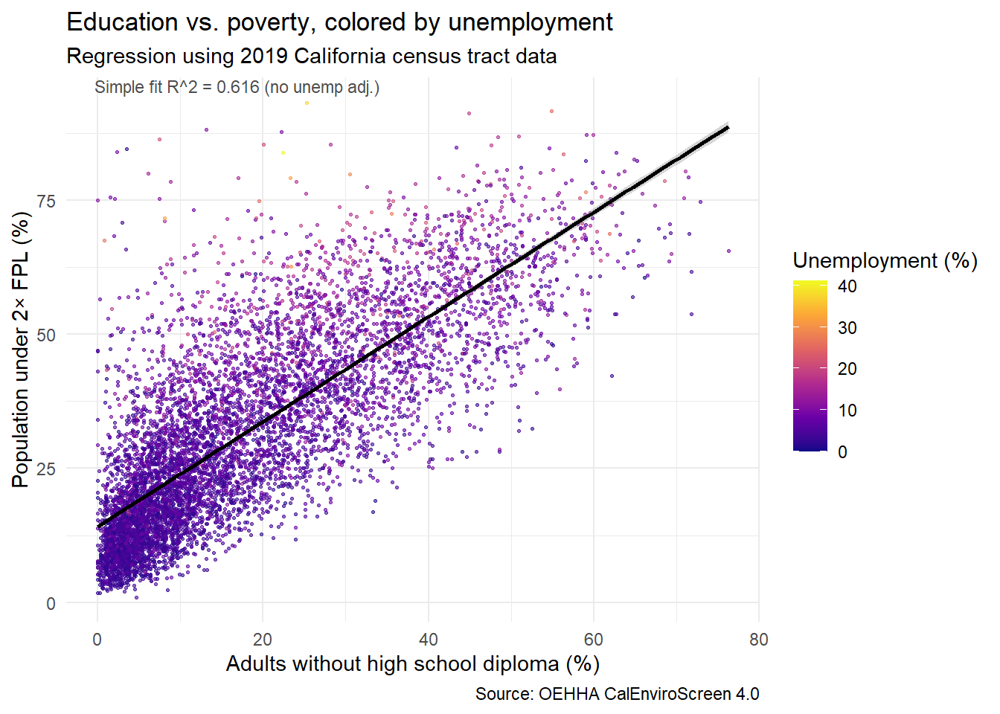
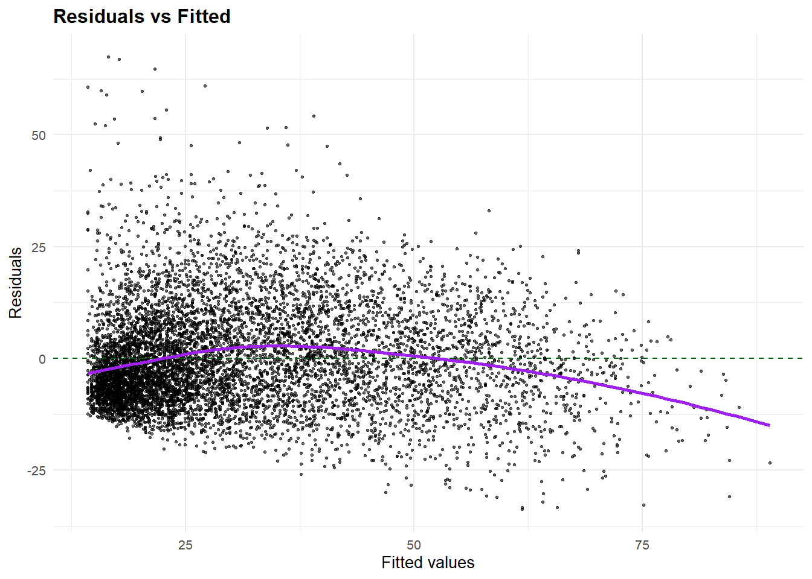
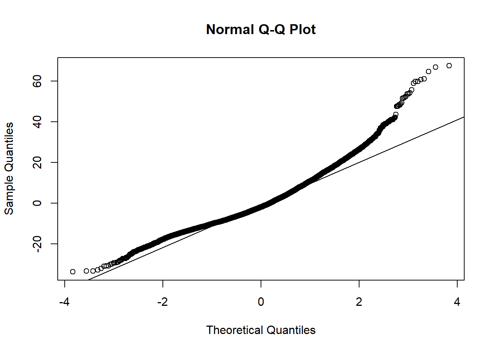
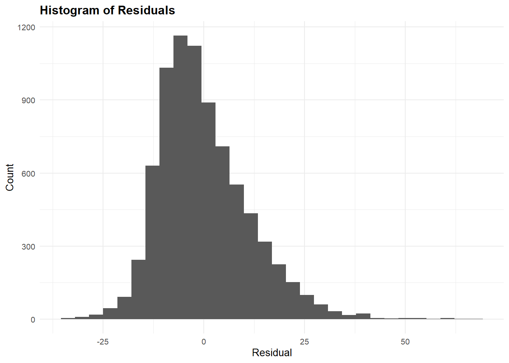

| variable | mean | sd | min | p25 | median | p75 | max | n |
|---|---|---|---|---|---|---|---|---|
| pov | 31.33 | 18.21 | 1 | 16.3 | 27.8 | 44.3 | 93.2 | 7658 |
| edu | 17.56 | 14.65 | 0 | 5.8 | 12.7 | 26.1 | 76.3 | 7658 |
| unemp | 6.26 | 3.77 | 0 | 3.6 | 5.5 | 8.0 | 41.1 | 7658 |
Linking Education, Unemployment, and Poverty
Insights from California’s CalEnviroScreen Data
Abstract
We investigate the relationship between low educational attainment and poverty across California communities by using data from CalEnviroScreen 4.0, which is a statewide screening tool developed by the California Office of Environmental Health Hazard Assessment (OEHHA) that uses 2019 census-tract location data. We use simple linear regression to model census-tract poverty rates as a function of percentage of adults living without a high school diploma, and present a supplemental model that additionally includes unemployment. The primary model will show that each percent increase in adults without a high school diploma per census-tract is associated with an average increase of .97% in poverty rate in a the same area. The model explains about 61.6% of tract-level variation in poverty, and is only minimally impacted when accounting for unemployment. This report will also diagnostic of the model that indicate heteroskedasticity and non-normal residuals, so we interpret interval estimates with caution. CalEnviroScreen is a powerful tool for addressing historical and continued inequality. By linking socioeconomic factors such as educational attainment with poverty, our analysis illustrates how the tool can inform priorities when seeking to mitigate socioeconomic disparities.
Introduction
The link between educational attainment to socioeconomic well-being has been widely corroborated in research (for example, Cutler and Lleras-Muney (2006) and Zajacova and Lawrence (2018)). The persistent geographic inequities California faces drives the need for us to take a closer look at how education relates to poverty when related to location. Therefore, using the CalEnviroScreen 4.0 dataset, (Office of Environmental Health Hazard Assessment (OEHHA) 2021), we ask the following question in this project: To what extent is tract-level poverty associated with low levels of education in California?.
Understanding this question can be an important way to learn poverty disparity mitigation techniques within communities to improve health, since low socioeconomic status has been tied to multiple environmental risks and health disparities Morello-Frosch and Shenassa (2006).
We address this question by fitting a simple linear regression by taking poverty rate as a function of percentage of adults lacking a high school diploma. We then extend the analysis by exploring the contribution of unemployment makes on the model and examining the robustness of linear regression model assumptions.
The remainder of this paper is structured as follows: Section 2 discusses the data, Section 3 the model and the methods we used, Section 4 presents the results, and Section 5 discusses the conclusions in addition to weaknesses with the conclusions from this model.
Data
In 2021, The California Environmental Protection Agency published its most recent version of the California Communities Environmental Health Screening tool, which is also known as CalEnviroScreen 4.0 (California Office of Environmental Health Hazard Assessment (OEHHA) 2021a). Since its original release in 2013, CalEnviroScreen has compiled and analyzed census-tract data in California. While its primary focus is to better understand and address environmental concerns in California communities, we can learn a great deal from the raw data that can be found on the CalEnviroScreen Data Hub (Office of Environmental Health Hazard Assessment (OEHHA) 2021) about possible socioeconomic well-being predictors and outcomes. There is a wealth of information around geospatial data that can be used to drive more equitable decision-making by exploring possible factors that play a role in changes to poverty levels.
We use the data from CalEnviroScreen 4.0 that uses data from the US Census Bureau’s American Community Survey (ACS) that collects information on educational attainment annually (California Office of Environmental Health Hazard Assessment (OEHHA) 2021b).
This dataset provides socioeconomic, health, and environmental measures, and our observational units are census tracts in California. For this analysis, we focus on the 2019 values of socioeconomic indicators from the Office of Environmental Health Hazard Assessment (OEHHA) (2021):
Poverty (pov): Percent of the population living below two times the federal poverty level (5-year estimate, 2015-2019) within each California census tract. Multiplying the federal poverty level is to account for the high cost of living in California.
Education (edu): Percent of adults that are 25+ years old without a high school diploma. This percentage was derived as 100 minus the share of adults with high school or higher education levels (estimated over 5 years, 2015-2019)
Unemployment (unemp): Percent of the labor force that is unemployed.
The data on educational attainment and poverty come 5-year estimates from 2015–2019 that come from the American Community Survey (ACS) (U.S. Census Bureau (2014); U.S. Census Bureau (n.d.)) and were presented within the Office of Environmental Health Hazard Assessment (OEHHA) (2021) dataset. We follow OEHHA’s indicator methods (California Office of Environmental Health Hazard Assessment (OEHHA) (2021b)), and we note that ACS estimates include margins of error. OEHHA uses standard error and corresponding SE screening to flag unreliable tracts. We remove tracts with missing values in our analysis, with a total of 7906 for our primary model and 7658 for our model including unemployment as a variable. All variables are percentages in between 0 and 100, facilitating coefficient interpretation as percentage-point changes. which facilitates our coefficient interpretation as changes in percentage-point.
Our interpretation of regression coefficients are represented as marginal changes in poverty rate per one-percentage-point change in education or unemployment. Possible limitations include rounding of reported percentages, geographic clustering effects not captured by the model, and the bounded nature of the data (0–100%), which can produce heteroskedastic residuals in linear regression.
Descriptive summaries show that poverty rates, education, and unemployment are all highly variable across tracts as shown in the table Table 1 that reports key summaries from our data. A scatterplot of poverty versus education (Figure 1) suggests a positive linear trend, while unemployment also shows a positive but weaker association with poverty (Figure 2).
Methods
To investigate the relationship between poverty rates and educational attainment, we adopt a simple linear regression model with poverty as the response and low-educational rate as the predictor. Let \(Y_i\) denote the percentage of the population living under the poverty threshold in census tract \(i\), and let \(X_i\) denote the percentage of adults without a high-school diploma in the same tract.
\[Y_i = \beta_0 + \beta_1X_i + \varepsilon_i \text{ for }i=1,...,n\]
where \(\beta_0\) (the intercept) represents the expected poverty rate in a census tract when \(X_i=0\), or when 0% of the adult population is living without a high school diploma. Additionally, \(\beta_1\) represents the marginal change in poverty (percentage points) for one point increase in \(X_i\), or adults without a high school diploma. Finally, \(\varepsilon_i\) denotes a random error term that encapsulates unobserved factors that impact poverty rates not explained by low-educational attainment percentage. In other words, we estimate a simple linear regression pov =\(\beta_0 + \beta_1\)(edu) + \(\varepsilon\) using OLS in R (R Core Team 2024; Gelman, Hill, and Vehtari 2021; Kutner et al. 2005).
In our data (number of tracts = 7906), the estimated intercept is \(\hat{\beta_0}\)= 14.255 and estimated slope is \(\hat{\beta_1}\)=0.979. In a supplementary model including unemployment, the fitted slope for education is with number of tracts equaling 7658 , the estimated intercept is \(\hat{\beta_0}=\) 7.91 and estimated slope is \(\hat{\beta_1}=\) 0.838 with \(R^2\) = 0.688.
The parameters of the model (\(\beta_0\) and \(\beta_1\)) are estimated using ordinary least squares, or OLS. We estimate parameters with ordinary least squares (OLS) with R (version 4.5.1) (R Core Team 2024; Kutner et al. 2005) using the built-in lm() function, which fits linear regression models by OLS. The basic syntax is lm(response ~ predictor, data = dataset), and in our case the function lm(pov ~ edu, data = to_analyze_df). This instructs R to regress the poverty rate (pov) on the percentage of adults without a high school diploma (edu) using the dataset that we have turned into a cleaned dataframe that omits null values. Here, pov is the response variable (dependent variable),edu is the predictor variable (independent variable), and the ~ operator indicates the model formula, meaning “pov” is modeled as a function of “edu”. The function estimates the intercept \(\beta_0\) and slope \(\beta_1\) by minimizing the sum of squared residuals. By default, lm() returns a model object that contains the estimated coefficients, residuals, fitted values, and summary statistics, which we accessed using functions such as summary() and coef().
To assess model fit, we report the estimated regression coefficients, standard errors, and coefficient of determination (\(R^2\)), and the associated confidence interval with our the correlation. We also present a scatterplot (Figure 1)of the data with the fitted regression line and a confidence band, which provides a visual assessment of model fit. As a robustness check, we fit a supplemental multiple linear regression including unemployment:
\[Y_i = \beta_0 + \beta_1X_i + \beta_2U_i +\varepsilon_i \text{ for }i=1,...,n\]
where \(U_i\) represents the unemployment percentage, and \(\beta_2\) is the slope on unemployment. This would be the expected change in the poverty rate for 1 percentage-point increase in unemployment, if education level is constant.
For this OLS, we adopt the standard assumptions of the linear regression model:
1. Linearity: The relationship between educational attainment and poverty is linear.
2. Independence of errors: The error terms \(\varepsilon_i\) are independent between different census tracts.
3. Constant variance: the error terms have constant variance across values of \(X_i\) (the low-educational attainment rate for census tract \(i\)).
4. Normality of residuals: the residuals are approximately normally distributed, meaning the error terms have a mean of zero and are normally distributed.
Because rates are bounded between 0 and 100, having a constant variance is unlikely. Therefore, we complete the following diagnostics and note implications for inference to evaluate whether the model comply with the assumptions of linear regression:
Residual plot: We examine a scatterplot of residuals versus fitted values (Figure 1) to assess linearity, independence of errors, and constant variance (Wickham 2016). A random scatter of residuals would indicate that the linearity and constant variance assumptions are reasonable.
Normality of residuals: We use a Q–Q plot (Figure 4) using R Core Team (2024) and a histogram of residuals (Figure 5) using Wickham (2016) to check whether they approximately follow a normal distribution. Additionally, we inspected other factors on poverty rates that were contained in the dataset such as unemployment (Figure 2) (Wickham 2016). Overall, the diagnostics provide evidence about the level of estimated coefficient reliability and inference validity from the model. Any violations of assumptions are noted and discussed in Section 4 and Section 5.
We conducted all analyses R (R Core Team 2024), and regression models were estimated using the base R function lm(). The model summaries and tidy coefficient tables were generated with the broom package (Robinson 2014). We used dplyr (Wickham 2016) (part of the tidyverse) to clean the raw data, and we formatted tables with (Xie2015.We?) produced visualizations with ggplot2 (Wickham 2016), with additional support from scales Wickham and Seidel (2022) for scaling and Nascimento (2019) for Q–Q plotting. Together, these packages helped us create data cleaning, regression modeling, and visualization that can be reproducible.
Results
The simple linear regression of poverty level on education yields the following fitted model:
\(\widehat{pov}=\) 14.255 \(+\) 0.979 \(\times(edu)\) with \(R^2=\) 0.616 and number of tracts = 7906.
Here is our interpretation of the coefficients:
The intercept \(\beta_0 \approx\) 14.255, so for a tract with 100% of its adults holding at least a high school diploma (or 0% lacking one), this model would predict the poverty rate to be an average of 14.26% in that tract.
The slope \(\beta_1 \approx\) 0.979. In other words, each one-percent increase in adults without a high-school diploma per census tract corresponds to an average 0.98% increase in poverty rate in that tract.
The model fit \(R^2=\) 0.62, so about 61.59% of the variation in the poverty rate we are measuring is explained by low-education attainment percentage within a census-tract.
The rounded \(p\)-value for education is <2e-16 (\(p < 0.001\)), which is far below common thresholds. This indicates that the observed data is not more extreme than the rejection region and the association is statistically significant (meaning this is very unlikely due to chance). Therefore, both coefficients are noteworthy.

We added a supplemental model with unemployment included to measure if another factor changes our results significantly. The education effect remains positive (0.838), and overall fit improves minimally (\(R^2 =\) 0.688, number of tracts 7658). When unemployment was added to the regression, the coefficient for education remained remarkable, but unemployment showed a weaker association with poverty. The overall model fit improved only slightly with the increase in \(R^2\). This suggests that differences in unemployment rates across tracts do not account for most of the variation in poverty once educational attainment is considered.

From our model, we find a 95% confidence interval for the education slope is approximately equal to [0.96166, 0.99574]. This means we are 95% confident that for each additional percentage point increase in adults without a high school diploma, the poverty rate of the same census tract will increase between 0.96166 and 0.99574 percentage points.
Below, we use visualize the diagnostics to help with our assessment of the validity of our confidence interval for our primary simple regression:



Additionally, we conduct a hypothesis test to formally evaluate whether education is associated with poverty. Let our type I error rate be \(\alpha = 0.05\). Let us test the following hypotheses:
\(H_0\): \(\beta_1 = 0\) (no relationship between education and poverty) vs. \(H_a\): \(\beta_1 \neq 0\).
The t-test for the education coefficient yields a large test statistic (\(t \approx 113\)) with a p-value less than 0.001. Because the p-value \(<\alpha=0.05\), we reject \(H_0\) and conclude that low educational attainment is associated with higher poverty rates at the census tract level. As an additional note, when unemployment is included in the supplemental model, the education effect remains relevant, while the unemployment coefficient is comparatively weaker. This suggests that unemployment alone does not explain most of the variation in poverty once education is accounted for.
Discussion
Summary: The slope is positive and statistically significant, so we can conclude that the poverty rate tends to be higher in locations where there is a higher percentage of adults with lower levels of education than high school diplomas. If the linear regression assumptions are true, the results we see in Section 4 indicate a moderate effect size in the data that suggest low-education attainment is a relevant predictor when predicting poverty rate (although not the only factor) .
Model assumptions: Our diagnostic plots show us several violations of the classical linear regression assumptions. Linearity appears reasonable from the Figure 1, but independence of errors is unlikely given clustering in Figure 3, and the residuals show variability and non-normality in Figure 3 and Figure 4. If the residuals were approximately normal, the black dots would fall close to the straight diagonal line of the Q-Q plot. With thousands of tracts, coefficient estimates are stable, but standard errors may be understated under OLS assumptions. However, the plot bends upwards both in the lower and upper tails. These issues limit the precision of our inference and confidence interval. Additionally, the histogram of residuals (Figure 5) appears approximately bell-shaped and centered near zero, which supports the assumption that the errors have mean zero. However, the distribution is not perfectly symmetric: the right tail is longer than the left, and there are some extreme positive residuals. This indicates mild right skew and the presence of high-poverty tracts where the model underpredicts. While the residuals do not follow a perfect normal distribution, the large sample size (n = 7906) reduces concerns about inference validity due to the Central Limit Theorem. Nevertheless, the skewness suggests that robust standard errors or a variance-stabilizing transformation (e.g., square-root of the response) might provide more reliable inference in future analyses. Overall though, the non-normality and changes in variance, our 95% confidence interval should only be drawn cautiously, so we might want to consider using more robust standard errors.
Comparing education and unemployment: When we added unemployment to the model, it did not meaningfully change the estimated effect of education. The unemployment has a weaker positive association with poverty, but the education coefficient remains consequential. This result challenges a possible assumption that unemployment is a primary driver of poverty. We see from Figure 2 that a high percentage of individuals are employed but remain below twice the federal poverty threshold California Office of Environmental Health Hazard Assessment (OEHHA) (2021b) set. This indicates situations where many individuals are working but still fall below the poverty threshold here. By comparison, educational attainment shows a stronger and more consistent relationship with poverty, which highlights its relevance as a key factor of socioeconomic well-being.
Generally speaking, the simple linear regression analysis for this research question can only draw questionable inferences, so the linear regression is likely not a full picture of the relationship between education and poverty. With that being said, we did see that the positive correlation in the linear regression model is likely statistically significant due to the p-value and \(R^2\) value. Therefore, there is a positive relationship between low education attainment percentage and poverty rate percentage.
Implications: We see that the findings support noting education as a factor in determining predictors of poverty in datasets like CalEnviroScreen, which are used to identify communities experiencing socioeconomic and environmental burdens. Policymakers and advocates can use this data to inform investments in education, workforce support, and pollution reduction to advance environmental justice and public health.
Limitations: We used cross-sectional, observational data, which limits our causal inferences. The nature of tract-level geographical dependence of the data likely violates the independence assumption. Additionally, the bounded percentage outcomes produce heteroskedasticity. Finally the ACS sampling error introduces measurement error.
On a broader level, a limitation of our analysis is the definition of poverty. CalEnviroScreen uses 200% of the federal poverty level (FPL) to account for California’s high cost of living. This is a more appropriate benchmark than the unadjusted FPL, it does not capture wide regional differences within the state. For example, housing costs in the Bay Area vs rural areas of California have a large range. Consequently, the same income threshold may reflect very different levels of economic hardship depending on location. This limitation means that our poverty measure may overstate poverty in some rural areas and understate it in high-cost metropolitan regions, which could feasibly introduce additional variation not explained by education or unemployment in our models. Another limitation is that the education measure applies only to adults aged 25 and older, but the poverty measure covers the entire population. This mismatch means that our predictor and outcome are not measured on exactly the same group. For example, tracts with many children in poverty but relatively well-educated adults could weaken the observed association. On the other side, tracts with low adult education may experience higher poverty rates even among children and elderly residents who are not part of the education measure. This difference in denominators introduces another possible measurement error into our regression.
References
California Office of Environmental Health Hazard Assessment (OEHHA). 2021a. “CalEnviroScreen 4.0: Maps & Data.” California Environmental Protection Agency. https://oehha.ca.gov/calenviroscreen/maps-data.
———. 2021b. “CalEnviroScreen 4.0: Updated Analysis.” California Environmental Protection Agency. https://oehha.ca.gov/sites/default/files/media/downloads/calenviroscreen/report/calenviroscreen40reportf2021.pdf.
Cutler, David M., and Adriana Lleras-Muney. 2006. “Education and Health: Evaluating Theories and Evidence.” NBER Working Paper Series, no. 12352. https://www.nber.org/papers/w12352.
Gelman, Andrew, Jennifer Hill, and Aki Vehtari. 2021. Regression and Other Stories. Cambridge University Press.
Kutner, Michael H., Christopher J. Nachtsheim, John Neter, and William Li. 2005. Applied Linear Statistical Models. 5th ed. New York: McGraw-Hill/Irwin.
Morello-Frosch, Rachel, and Edmond D. Shenassa. 2006. “Environmental Justice and the Distribution of Pollution: The Case of California’s Central Valley.” Environmental Health Perspectives 114 (12): 1810–17. https://doi.org/10.1289/ehp.9310.
Nascimento, Luis Augusto Perdigão do. 2019. Qqplotr: Quantile-Quantile Plots for Ggplot2. https://CRAN.R-project.org/package=qqplotr.
Office of Environmental Health Hazard Assessment (OEHHA). 2021. “CalEnviroScreen Data Hub.” https://calenviroscreen-oehha.hub.arcgis.com/#Data.
R Core Team. 2024. R: A Language and Environment for Statistical Computing. Vienna, Austria: R Foundation for Statistical Computing. https://www.R-project.org/.
Robinson, David. 2014. “Broom: An r Package for Converting Statistical Analysis Objects into Tidy Data Frames.” arXiv Preprint arXiv:1412.3565. https://arxiv.org/abs/1412.3565.
U.S. Census Bureau. n.d. “Data.census.gov.” https://data.census.gov/cedsci/.
———. 2014. “American Community Survey Design and Methodology Report.” https://www2.census.gov/programs-surveys/acs/methodology/design_and_methodology/acs_design_methodology_ch12_2014.pdf.
Wickham, Hadley. 2016. Ggplot2: Elegant Graphics for Data Analysis. New York: Springer.
Wickham, Hadley, and Dana Seidel. 2022. Scales: Scale Functions for Visualization. https://CRAN.R-project.org/package=scales.
Zajacova, Anna, and Elizabeth M. Lawrence. 2018. “Education and Health: The Casual Association and Challenges.” Annual Review of Public Health 39: 273–89. https://doi.org/10.1146/annurev-publhealth-031816-044628.